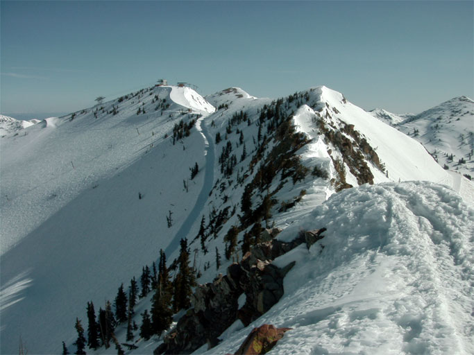

This photo looks towards the Tram at the top of Hidden Peak. It's taken from the same place on from the lower ridge as the photo in this page, but looking the other way. The cat track is the Road to Provo, and the starting point for the hike is on this road in the lower left of the photo.